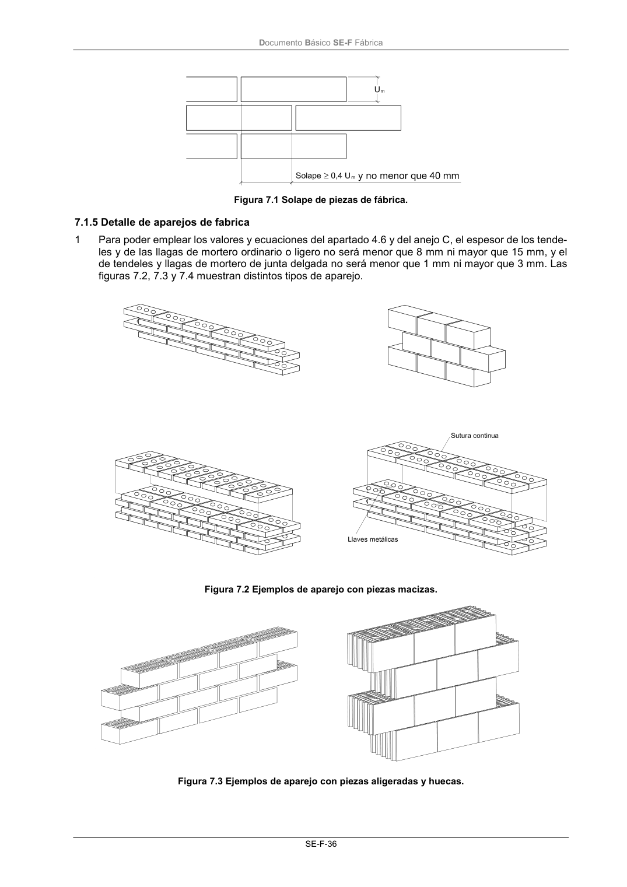

DB-SE-F · 7.1.5 Detalle de aparejos de fabrica · versión 2019-12-20
SHA256: e3e0805c3b4c307519c26dc34c3fdbf143d842edd013c91b0f52d2c73403d91c · página física 40 de 70 · métodos de encabezado
solo si están cotejados.
Formatos: Markdown · JSON de bloques · PDF p. 40 · imagen PNG
Documento Básico SE-F Fábrica SE-F-36 Figura 7.1 Solape de piezas de fábrica. 7.1.5 Detalle de aparejos de fabrica 1 Para poder emplear los valores y ecuaciones del apartado 4.6 y del anejo C, el espesor de los tende- les y de las llagas de mortero ordinario o ligero no será menor que 8 mm ni mayor que 15 mm, y el de tendeles y llagas de mortero de junta delgada no será menor que 1 mm ni mayor que 3 mm. Las figuras 7.2, 7.3 y 7.4 muestran distintos tipos de aparejo. Figura 7.2 Ejemplos de aparejo con piezas macizas. Figura 7.3 Ejemplos de aparejo con piezas aligeradas y huecas.
